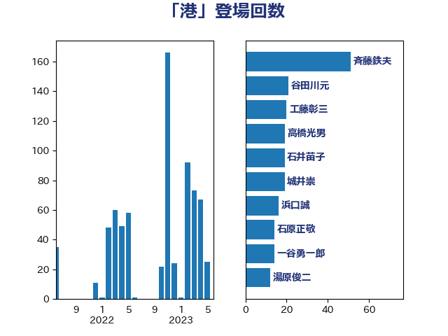

単語「港」

| 斉藤鉄夫 | 公明党 | 51 回 |
| 谷田川元 | 立憲民主党 | 21 回 |
| 工藤彰三 | 自由民主党 | 20 回 |
| 高橋光男 | 公明党 | 19 回 |
| 石井苗子 | 日本維新の会 | 19 回 |
| 城井崇 | 立憲民主党 | 19 回 |
| 浜口誠 | 国民民主党 | 16 回 |
| 石原正敬 | 自由民主党 | 14 回 |
| 一谷勇一郎 | 日本維新の会 | 14 回 |
| 湯原俊二 | 立憲民主党 | 12 回 |
| 朝日健太郎 | 自由民主党 | 12 回 |
| 赤嶺政賢 | 日本共産党 | 11 回 |
| 福島伸享 | 無所属 | 11 回 |
| 山本佐知子 | 自由民主党 | 10 回 |
| 長友慎治 | 国民民主党 | 9 回 |
| 足立敏之 | 自由民主党 | 9 回 |
| 矢倉克夫 | 公明党 | 9 回 |
| 伊藤渉 | 公明党 | 9 回 |
| 田中健 | 国民民主党 | 8 回 |
| 宮本岳志 | 日本共産党 | 8 回 |
| 水野素子 | 立憲民主党 | 7 回 |
| 櫻井充 | 自由民主党 | 7 回 |
| 杉本和巳 | 日本維新の会 | 7 回 |
| 岡田直樹 | 自由民主党 | 7 回 |
| 鈴木敦 | 国民民主党 | 6 回 |
| 近藤和也 | 立憲民主党 | 6 回 |
| 瀬戸隆一 | 自由民主党 | 6 回 |
| 渡辺猛之 | 自由民主党 | 6 回 |
| 吉田はるみ | 立憲民主党 | 6 回 |
| 今枝宗一郎 | 自由民主党 | 6 回 |
| 高橋千鶴子 | 日本共産党 | 5 回 |
| 長坂康正 | 自由民主党 | 5 回 |
| 赤羽一嘉 | 公明党 | 5 回 |
| 浜地雅一 | 公明党 | 5 回 |
| 山下芳生 | 日本共産党 | 5 回 |
| 大口善徳 | 公明党 | 5 回 |
| 中川康洋 | 公明党 | 5 回 |
| 青木愛 | 立憲民主党 | 4 回 |
| 青山繁晴 | 自由民主党 | 4 回 |
| 鈴木義弘 | 国民民主党 | 4 回 |
| 神田潤一 | 自由民主党 | 4 回 |
| 榛葉賀津也 | 国民民主党 | 4 回 |
| 松原仁 | 立憲民主党 | 4 回 |
| 古川直季 | 自由民主党 | 4 回 |
| 三浦信祐 | 公明党 | 4 回 |
| 須藤元気 | 無所属 | 3 回 |
| 音喜多駿 | 日本維新の会 | 3 回 |
| 野村哲郎 | 自由民主党 | 3 回 |
| 西野太亮 | 自由民主党 | 3 回 |
| 藤木眞也 | 自由民主党 | 3 回 |
| 羽田次郎 | 立憲民主党 | 3 回 |
| 深澤陽一 | 自由民主党 | 3 回 |
| 池下卓 | 日本維新の会 | 3 回 |
| 横山信一 | 公明党 | 3 回 |
| 森田俊和 | 立憲民主党 | 3 回 |
| 梅谷守 | 立憲民主党 | 3 回 |
| 杉田水脈 | 自由民主党 | 3 回 |
| 岩渕友 | 日本共産党 | 3 回 |
| 山岡達丸 | 立憲民主党 | 3 回 |
| 小里泰弘 | 自由民主党 | 3 回 |
| 寺田静 | 無所属 | 3 回 |
| 古川元久 | 国民民主党 | 3 回 |
| 加藤鮎子 | 自由民主党 | 3 回 |
| 伊藤孝江 | 公明党 | 3 回 |
| 伊波洋一 | 無所属 | 3 回 |
| 高見康裕 | 自由民主党 | 2 回 |
| 野田国義 | 立憲民主党 | 2 回 |
| 西村康稔 | 自由民主党 | 2 回 |
| 神田憲次 | 自由民主党 | 2 回 |
| 石橋通宏 | 立憲民主党 | 2 回 |
| 石川大我 | 立憲民主党 | 2 回 |
| 石井拓 | 自由民主党 | 2 回 |
| 白石洋一 | 立憲民主党 | 2 回 |
| 玄葉光一郎 | 立憲民主党 | 2 回 |
| 猪瀬直樹 | 日本維新の会 | 2 回 |
| 渡辺周 | 立憲民主党 | 2 回 |
| 浅野哲 | 国民民主党 | 2 回 |
| 浅川義治 | 日本維新の会 | 2 回 |
| 比嘉奈津美 | 自由民主党 | 2 回 |
| 森山浩行 | 立憲民主党 | 2 回 |
| 森屋隆 | 立憲民主党 | 2 回 |
| 梅村みずほ | 日本維新の会 | 2 回 |
| 島尻安伊子 | 自由民主党 | 2 回 |
| 大野泰正 | 自由民主党 | 2 回 |
| 中川郁子 | 自由民主党 | 2 回 |
| 高野光二郎 | 自由民主党 | 1 回 |
| 高木真理 | 立憲民主党 | 1 回 |
| 阿達雅志 | 自由民主党 | 1 回 |
| 鈴木英敬 | 自由民主党 | 1 回 |
| 金子恵美 | 立憲民主党 | 1 回 |
| 里見隆治 | 公明党 | 1 回 |
| 萩生田光一 | 自由民主党 | 1 回 |
| 菅直人 | 立憲民主党 | 1 回 |
| 芳賀道也 | 国民民主党 | 1 回 |
| 美延映夫 | 日本維新の会 | 1 回 |
| 笠井亮 | 日本共産党 | 1 回 |
| 穀田恵二 | 日本共産党 | 1 回 |
| 石川香織 | 立憲民主党 | 1 回 |
| 石井浩郎 | 自由民主党 | 1 回 |
| 田村貴昭 | 日本共産党 | 1 回 |
| 猪口邦子 | 自由民主党 | 1 回 |
| 渡辺創 | 立憲民主党 | 1 回 |
| 浜田靖一 | 自由民主党 | 1 回 |
| 浅田均 | 日本維新の会 | 1 回 |
| 泉田裕彦 | 自由民主党 | 1 回 |
| 泉健太 | 立憲民主党 | 1 回 |
| 池畑浩太朗 | 日本維新の会 | 1 回 |
| 梶原大介 | 自由民主党 | 1 回 |
| 本田顕子 | 自由民主党 | 1 回 |
| 日下正喜 | 公明党 | 1 回 |
| 庄子賢一 | 公明党 | 1 回 |
| 島村大 | 自由民主党 | 1 回 |
| 山際大志郎 | 自由民主党 | 1 回 |
| 山田勝彦 | 立憲民主党 | 1 回 |
| 山崎正恭 | 公明党 | 1 回 |
| 山岸一生 | 立憲民主党 | 1 回 |
| 小田原潔 | 自由民主党 | 1 回 |
| 小熊慎司 | 立憲民主党 | 1 回 |
| 小林鷹之 | 自由民主党 | 1 回 |
| 室井邦彦 | 日本維新の会 | 1 回 |
| 大西健介 | 立憲民主党 | 1 回 |
| 大島敦 | 立憲民主党 | 1 回 |
| 塩崎彰久 | 自由民主党 | 1 回 |
| 堂故茂 | 自由民主党 | 1 回 |
| 堀内詔子 | 自由民主党 | 1 回 |
| 勝部賢志 | 立憲民主党 | 1 回 |
| 佐藤正久 | 自由民主党 | 1 回 |
| 仁木博文 | 無所属 | 1 回 |
| 井坂信彦 | 立憲民主党 | 1 回 |
| 中谷真一 | 自由民主党 | 1 回 |
| 三木圭恵 | 日本維新の会 | 1 回 |
| 三反園訓 | 無所属 | 1 回 |
| おおつき紅葉 | 立憲民主党 | 1 回 |